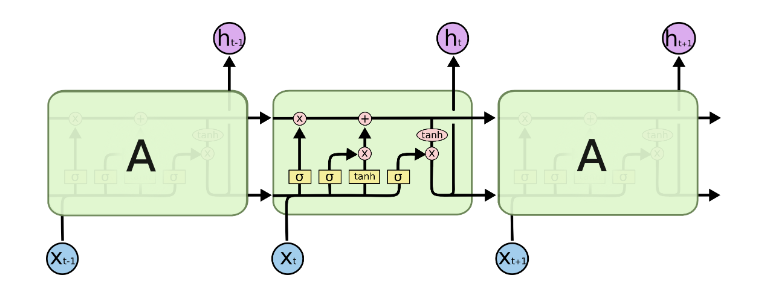

LSTM from Scratch
In this post, we will implement a simple next word predictor LSTM from scratch using torch.
A gentle Introduction to LSTM
Long Short Term Memory networks – usually just called “LSTMs” – are a special kind of RNN, capable of learning long-term dependencies. They were introduced by Hochreiter & Schmidhuber (1997). As LSTMs are also a type of Recurrent Neural Network, they too have a hidden state, but they have another memory cell called the cell state as well.
The LSTM model we’re gonna implement follows this architecture.

To learn about their detailed structure here is a reference to this awesome blog Understanding LSTM Networks – colah’s blog.
For simplified architecture:

Imports
Lets import the required library
import torch
import torch.nn as nn
import torch.nn.functional as F
Data Preparation
We’ll be using autoregressive sentence generation for our dataset. This approach involves predicting the next word in a sequence based on the words that came before it.
Consider a sentence,
“I am Peter the hero.”
| Input Sequence | Target Output |
|---|---|
| [I] | AM |
| [I, AM] | Peter |
| [ I, AM, Peter] | THE |
| [I, AM, Peter, THE] | HERO |
We’ll be working with George Orwell’s essay The Spike as our dataset. Since the dataset is relatively small, it allows us to focus on developing a deeper intuition without getting overwhelmed by the volume of data.
Tokenization

Next, I’ll create a dictionary to convert words into indices—a common practice in Natural Language Processing (NLP). Instead of relying on libraries, I’ll build it from scratch to better understand how it works.
char2idx={char:i for i,char in enumerate(set(data))}
# char2idx['.']=0
idx2char={i:char for i,char in enumerate(set(data))}
We can run char2idx to view the word mapping to indices.
x=[]
for i in orgi.split("\n"):
x.append([char2idx[j] for j in i.split(" ")])
This snippet processes a text dataset to convert words into their corresponding indices using the char2idx dictionary we created earlier.
X_train = [] # List to store input sequences
Y_train = [] # List to store corresponding outputs
for sequence in x:
for i in range(1, len(sequence)-1):
# Input is the subsequence from start to the ith element
X_train.append(sequence[:i])
# Output is the ith element (next token)
Y_train.append(sequence[i])
This code prepares the dataset for autoregressive sentence generation, a technique where the model predicts the next token in a sequence based on previous tokens
For example, if the sequence is [1, 2, 3, 4], the resulting pairs would look like this:
- Input:
[1], Output:2 - Input:
[1, 2], Output:3 - Input:
[1, 2, 3], Output:4
Since LSTMs require input sequences of the same length, I padded all sequences to a fixed maximum length. I chose to pad at the beginning of the sequence because it preserves the actual data at the end, which is where the LSTM focuses more when processing the sequence. This ensures that the more meaningful tokens remain closer to the output
max_len=max([len(i) for i in X_train])
vocab_size=len(set(data))
def pre_pad_sequences_pytorch(sequences, max_len):
padded_sequences = []
for seq in sequences:
# If the sequence is shorter than max_len, pad with zeros at the beginning
if len(seq) < max_len:
padded_seq = [0] * (max_len - len(seq)) + seq # Pre-padding with 0
# If the sequence is longer than max_len, truncate it
else:
padded_seq = seq[-max_len:]
padded_sequences.append(padded_seq)
return torch.tensor(padded_sequences)
X_train_padded = pre_pad_sequences_pytorch(X_train, max_len)
X_train_padded=X_train_padded.unsqueeze(-1)
Y_train=torch.tensor(Y_train)
This creates a dataset ready to be set into LSTM network.
Finally, the LSTM
##### Long Short-Term Memory Network Class #####
class LSTM:
def __init__(self, vocab_size, embedding_dim, hidden_size, output_size):
self.hidden_size = hidden_size
#embedding layer
self.embedding = torch.randn(vocab_size, embedding_dim, requires_grad=True)
# Initialize weights with requires_grad=True
#forget gate
self.Wf = torch.randn(hidden_size, embedding_dim + hidden_size, requires_grad=True)
self.bf = torch.zeros(hidden_size, requires_grad=True)
#input gate
self.Wi = torch.randn(hidden_size, embedding_dim + hidden_size, requires_grad=True)
self.bi = torch.zeros(hidden_size, requires_grad=True)
#candidate gate
self.Wc = torch.randn(hidden_size, embedding_dim + hidden_size, requires_grad=True)
self.bc = torch.zeros(hidden_size, requires_grad=True)
#output gate
self.Wo = torch.randn(hidden_size, embedding_dim + hidden_size, requires_grad=True)
self.bo = torch.zeros(hidden_size, requires_grad=True)
#final gate
self.Wv = torch.randn(output_size, hidden_size, requires_grad=True)
self.bv = torch.zeros(output_size, requires_grad=True)
self._initialize_weights()
This is a custom implementation of a Long Short-Term Memory (LSTM) network. It takes four inputs
vocab_size,embedding_dim,hidden_size and output_size vocab_size is the number of unique words in your dataset.
embedding_dim is the size of the word embeddings. Instead of representing words as simple indices (like 1, 2, 3, etc.), we represent them as dense vectors (e.g., [0.2, -0.5, 0.7, …]).
Why embedding layer is needed ?
- Words are initially represented as indices (e.g., “cat” = 1, “dog” = 2, etc.). But these indices don’t carry any meaningful information about the words.
- The embedding layer converts these indices into dense vectors of size
embedding_dim. These vectors are trainable, meaning the model will learn the best way to represent each word during training. - For example, if
embedding_dim =4, the word “cat” might be represented as a vector like [0.1, -0.3, 0.5, 0.9].
https://medium.com/analytics-vidhya/embeddings-the-what-the-why-and-the-how-15a6a3c99ce8 This blogs deeps dives into the working and importance of Embeddings layer.
The other function we’ll be defining is a Xavier Initialization. Recurrent neural networks are very sensitive to the initialization used, so choosing the right one is important. It’s probably enough to know that the Xavier Initialization is a good choice; however, we can take a look at the math here.
def _initialize_weights(self):
nn.init.xavier_uniform_(self.Wf)
nn.init.xavier_uniform_(self.Wi)
nn.init.xavier_uniform_(self.Wc)
nn.init.xavier_uniform_(self.Wo)
nn.init.xavier_uniform_(self.Wv)
def parameters(self):
# Return a list of all parameters (weights and biases) in the model
return [self.Wf, self.bf, self.Wi, self.bi, self.Wc, self.bc, self.Wo, self.bo, self.Wv, self.bv, self.embedding]
The next function to define is the forward function.
def forward(self, x, init_states=None):
# Apply embedding layer to input indices
x=x.squeeze(dim=-1)
x = self.embedding[x]
batch_size, seq_len, _ = x.size()
# Initialize h_t and c_t if init_states is None
if init_states is None:
h_t = torch.zeros(batch_size, self.hidden_size, requires_grad=True)
c_t = torch.zeros(batch_size, self.hidden_size, requires_grad=True)
else:
h_t, c_t = init_states
outputs = []
for t in range(seq_len):
x_t = x[:, t, :] # Shape: (batch_size, embedding_dim)
Z_t = torch.cat([x_t, h_t], dim=1) # Shape: (batch_size, embedding_dim + hidden_size)
# Forget gate
ft = torch.sigmoid(Z_t @ self.Wf.t() + self.bf)
# Input gate
it = torch.sigmoid(Z_t @ self.Wi.t() + self.bi)
# Candidate cell state
can = torch.tanh(Z_t @ self.Wc.t() + self.bc)
# Output gate
ot = torch.sigmoid(Z_t @ self.Wo.t() + self.bo)
c_t = c_t * ft + can * it
h_t = ot * torch.tanh(c_t)
# Compute output for current time step
y_t = h_t @ self.Wv.t() + self.bv
return y_t, (h_t, c_t)
When building a model for next-word prediction, the goal is to predict the most likely word that follows a given sequence. In this context, we don’t need outputs from every timestep of the sequence—only the final output (from the last timestep) is necessary to make the prediction.
Now lets initialize our Model.
We’ll be using a hidden size of 128 and an embedding dimension of 10 for our model. For comparison, GPT-2 Small (with 117 million parameters) used an embedding dimension of 768, and the latest GPT-4 uses 16,384. Since we are working with a small dataset, a smaller embedding dimension should work, and I chose 10 . You can play with this value to see how it plays out.
model = LSTM(vocab_size=vocab_size, embedding_dim=128, hidden_size=128, output_size=vocab_size)
params = model.parameters()
optimizer = torch.optim.Adam(params, lr=0.005)
Training Loop
hidden_state = None # Initialize hidden state
for _ in range(500):
# Sample a batch
batch_indices = torch.randint(0, X_train_padded.shape[0], (128,))
x_train = X_train_padded[batch_indices] # Shape: (batch_size, seq_len)
# Forward pass
outputs,hidden_state = model.forward(x_train, init_states=hidden_state)
# print(outputs.shape)
h_t, c_t = hidden_state
hidden_state = (h_t.detach(), c_t.detach()) # Detach hidden state for next batch
# Compute loss
y_batch = Y_train[batch_indices] # Shape: (batch_size, seq_len, vocab_size)
loss = criterion(outputs, y_batch)
# Backward pass and optimization
optimizer.zero_grad()
loss.backward()
optimizer.step()
print(loss)
This training approach grabs a random batch of 128 data points, puts them into the model, and hopes for the best, kind of like cramming for an exam with random notes you found in your bag. While it’s not the most efficient way to train, I went with it to really wrap my head around how batches flow through the network. After each iteration, the hidden state is politely told, “Take a break, you’ve done enough,” and detached. This prevents PyTorch from becoming a hoarder and building a massive computation graph that would slow things down to a crawl. For optimization, I used the Adam optimizer. Though simple, this setup helped me grasp the inner workings of batching and hidden state management in LSTMs.
Before we begin training the network, let’s see how our model performs with its randomly initialized weights. This will give us a baseline idea of what kind of text it generates before learning anything meaningful from the data.
The following code preprocess the input and passes it to the model
def generate_sequence(model, seed_string, char2idx, idx2char, sequence_length, max_len=55):
seed_indices = [char2idx[word] for word in seed_string.split(" ") if word in char2idx]
seed_tensor = torch.tensor(seed_indices).unsqueeze(0) # Shape: (1, seq_len)
generated_indices = seed_indices[:]
hidden_state = None
for _ in range(sequence_length):
# Pre-pad the input sequence to match the model's expected input size
padded_input = pre_pad_sequences_pytorch([generated_indices], max_len).unsqueeze(-1)
# Get the model output and hidden state
output, (hidden_state) = model.forward(padded_input, hidden_state)
# Take the output corresponding to the last token
next_token_logits = output # Shape: (1, vocab_size)
# Use softmax to get probabilities and sample the next token
next_token_prob = torch.softmax(next_token_logits, dim=-1)
# next_token_idx = torch.multinomial(next_token_prob, num_samples=1).item()
next_token_idx=torch.argmax(next_token_prob).item()
# Append the predicted token to the sequence
generated_indices.append(next_token_idx)
# Convert indices back to characters
generated_words = [idx2char[idx] for idx in generated_indices]
return " ".join(generated_words)
# Example usage:
seed_string = "scum"
sequence_length = 20
generated_text = generate_sequence(model, seed_string, char2idx, idx2char, sequence_length)
print("Generated Text:")
print(generated_text)
Now for a sequence_length of 20 this is what our model outputs.
It is.' if bath, is.' if bath, cockney side, black serve is.' go three asleep straw bath, is.' cotton when when This up apparatus kind where Majors tub a stripped eight
Doesn’t makes any sense.
Now Lets train the model and run this code again.
Now I trained the model for 300 iteration, it started with an initial loss of 6.85 reaching to 0.1084 at the end of 300 iteration. So, our model learnt well from the data. Lets see how our model performs after training on the same seed string.
Generated Text:
scum my was much luckier than the others, because at ten o'clock the Tramp Major picked me out for the most coveted of all jobs in the spike, the job of helping in the workhouse kitchen. There was not really any work to be done there, and I was able to
Much better . Lets generate a paragraph now .
Generated Text:
scum my was much luckier than the others, because at ten o'clock the Tramp Major picked me out for the most coveted of all jobs in the spike, the job of helping in the workhouse kitchen. There was not really any work to be done there, and I was able to make off and hide in a shed used for storing potatoes, together with some workhouse paupers who were skulking to avoid the Sunday-morning service. There was a stove burning there, and comfortable packing cases to sit on, and back numbers of the Family Herald, and even a copy of Raffles from the workhouse library. It was paradise after the grime, of Sunday. It appeared the Tramp Major served the than before and the hot pipes. The cotton blankets were almost useless. One spent the night in turning from side to side, falling asleep for ten minutes and waking half frozen, and watching for the medical tables. It was a gloomy, chilly, limewashed place, consisting only of a bathroom and dining-room and about a hundred narrow stone cells. The terrible Tramp Major met us at the door and herded us into the bathroom to be stripped and searched. He was a gruff, soldierly man of forty, a pound of bread, a bit of margarine, and a pint of so-called tea. It took us five minutes to gulp down the cheap, noxious food. Then the Tramp Major served us with three cotton blankets each, and drove us off to our cells for the night. The doors were locked on the outside a little before seven in the evening, and would stay locked for the next twelve twelve hours in the spike, told tales of mooching, of pints stood him in the boozers, of the night for giving a back answer. When You, came to be searched, he fair held you upside down and shook you. If you were caught with tobacco there was bell to. Pay, and if you went in with money (which is against the law) God help help had no socks, except the tramps had already washed to our about and and for the lot of spring, perhaps—the authorities little It of the water, and decided to go dirty for the queer habit of sleeping in his hat, grumbled about a parcel of tommy that he had lost on the toad. Bill the moocher, the best built man of

But it looks like our small model memorized the paragraph instead of learning any real patterns. This is a case of overfitting. Since we trained the model for 300 epochs on such a small dataset, it essentially “rote learned” the paragraph and just outputs the exact same text from the dataset
In generating text, we initially used argmax with torch.argmax(next_token_prob).item(), which simply picks the word with the highest probability from the output distribution. This approach is deterministic, meaning it will always choose the same word if the probabilities don’t change.
Now, let’s try using a multinomial distribution instead. A multinomial distribution creates a probability distribution over all possible tokens, allowing us to sample the next token randomly based on the probabilities. Instead of always choosing the word with the highest probability, the multinomial distribution introduces some randomness by selecting tokens based on their likelihood.
For this uncomment the line # next_token_idx = torch.multinomial(next_token_prob, num_samples=1).item().
This method introduces variations in the text output, as the model can now generate different sequences even when given the same starting point. It’s like giving the model a little creative freedom, kind of like letting it freestyle instead of sticking to a strict script.
That wraps up this blog. Here, we generated text sequences using a trained LSTM model. I know there’s a lot of room for improvement, but the goal was to get a basic understanding of data preprocessing and how LSTMs work. For more structured and efficient code, it would make sense to use PyTorch’s nn.LSTM module.
What’s Next?
To improve this model:
- Add Dropout: Prevent overfitting with regularization techniques.
- Use Better Sampling: Replace the random batch sampling with more structured approaches like sequential data loading.
- Increase Dataset Size: Larger datasets will yield more meaningful insights during training.
Thanks for sticking around till the end! This being my first blog, I’m sure it’s not perfect, but I’ll work on improving my writing in the future. Appreciate you reading through!
Here’s the GitHub repository with the code and dataset used for this project. Feel free to check it out!